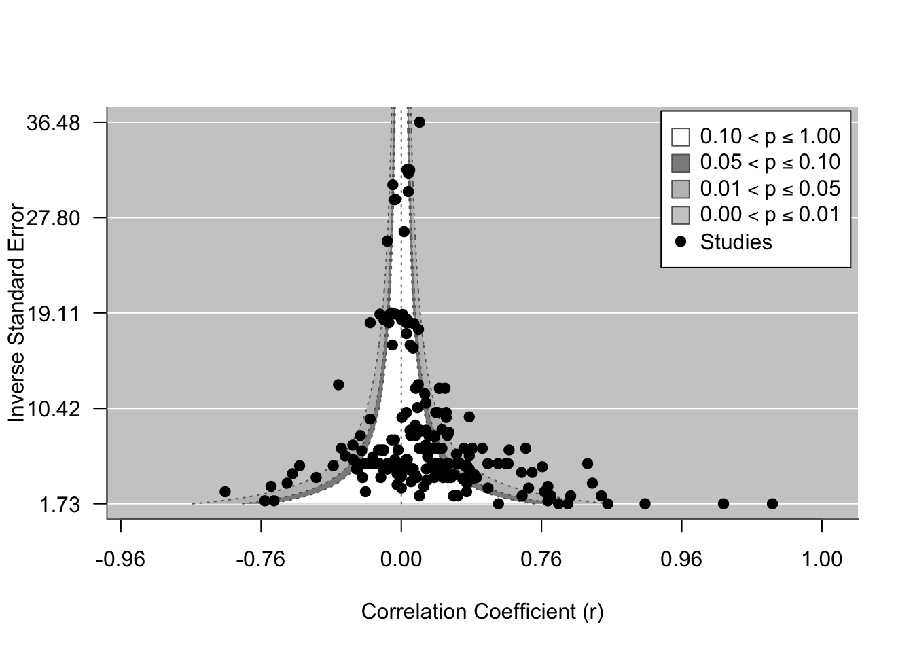
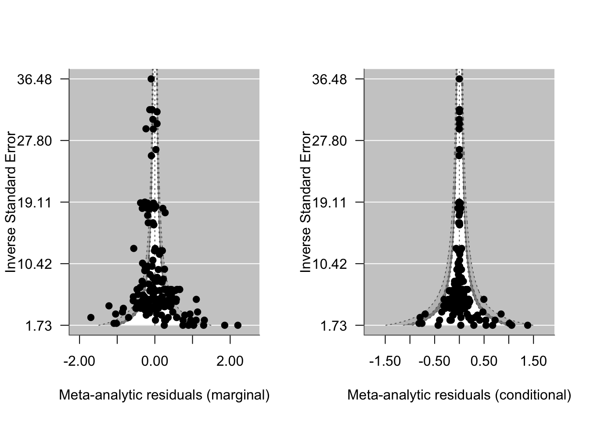

Meta-analyst’s have worked hard to develop tools that can be used to try and understand different forms of publication practices and biases within the scientific literature. It is useful to distinguish a few related but distinct phenomena that are often lumped together under the umbrella of “publication bias” (Nakagawa et al., 2022; Yang et al., 2024):
Small-study effects – the tendency for small (low-precision) studies to report systematically different effect sizes than large studies. This is what funnel plots and Egger-type tests are designed to detect.
Selective reporting (‘file-drawer’ / p-hacking) – studies, or individual results within studies, are more likely to be written up or included if they are statistically significant or in the “expected” direction (Jennions et al., 2013).
Time-lag bias – early studies on a topic tend to report larger effect sizes than later studies, often because significant early findings are published faster.
Decline effects – the related phenomenon where effect sizes shrink as a field matures, potentially as initial claims are revisited with larger samples and more rigorous designs.
Visual and quantitative tools have been developed try and identify and ‘correct’ for such biases on meta-analytic results (Jennions et al., 2013; Nakagawa et al., 2022; Rothstein et al., 2005; Yang et al., 2024). Having said that, aside from working hard to try and incorporate ‘gray literature’ (unpublished theses, government reports, etc.) and working hard to include work done in non-English speaking languages, there is little one can truly due to counteract publication biases beyond a few simple tools (which all have limitations in themselves). We cannot know for certain what isn’t published in many cases or how a sample of existing work on a topic might be biased. Nonetheless, exploring the possibility of publication bias and its possible effects on conclusions is a core component of meta-analysis (O’Dea et al., 2021).
In this tutorial, we’ll overview some ways we can attempt to understand whether publication bias is present or not using visual tools. In the next tutorial, we will cover analytical approaches that can be used as sensitivity analyses to explicitly test for small-study effects, time-lag bias, and selective reporting, and attempt to estimate what the effect size might look like if these biases were absent. This includes both the familiar multilevel Egger-type regression (Nakagawa et al., 2022) and more recent bias-robust estimation approaches that simultaneously handle non-independence among effect sizes (Yang et al., 2024). Of course, often we will never know whether such biases exist and high heterogeneity can result in apparent publication bias when none exist. The goal here is to formally play a thought experiment: if publication bias were to exist what form would it be expected to take and how would our conclusions change if we were to have access to all available studies regardless of significance or power?
Visually Assessing Publication Bias
Introduction
We’re going to have a look at a meta-analysis by Arnold et al. (2021) that explores the relationship between resting metabolic rate and fitness in animals. Publication bias is slightly subtle in this particular meta-analysis, but it does appear to be present in some form both visually and analytically. We’ll start off this tutorial just visually exploring for evidence of publication bias and discuss what it might look like and why.
Download the Data
Code
# Packagespacman::p_load(tidyverse, metafor, orchaRd)# Download the data. Exclude NA in r and sample size columnsarnold_data <-read.csv("https://raw.githubusercontent.com/pieterarnold/fitness-rmr-meta/main/MR_Fitness_Data_revised.csv")# Exclude some NA's in sample size and rarnold_data <- arnold_data[complete.cases(arnold_data$n.rep) &complete.cases(arnold_data$r),]# Calculate the effect size, ZCORarnold_data <- metafor::escalc(measure ="ZCOR", ri = r, ni = n.rep, data = arnold_data, var.names =c("Zr", "Zr_v"))# Lets subset to endotherms for demonstration purposesarnold_data_endo <- arnold_data %>%mutate(endos =ifelse(Class %in%c("Mammalia", "Aves"), "endo", "ecto")) %>%filter(endos =="endo"& Zr <=3) # Note that one sample that was an extreme outlier was removed in the paper.# Add in observation-level (residual) arnold_data_endo$obs <-1:dim(arnold_data_endo)[1]
Contour-enhanced Funnel Plots
Funnel plots are by far the most common visual tool for assessing the possibility of publication bias (Nakagawa et al., 2022). Just like any exploratory analysis, these are just visual tools. Let’s have a look at a funnel plot of the data. Funnel plots plot the the effect size (x-axis) against some form of uncertainty around the effect size, such as sampling variance or precision (y-axis). While we acknowledge that many other types of plots exist to explore the possibility for publication bias (Jennions et al., 2013; Nakagawa et al., 2022; Rothstein et al., 2005), we will only cover this more common type.
If no publication bias exists then we would expect the plot to look fairly symmetrical and funnel shaped (hence why it’s called a funnel plot!). The reason why the shape is a funnel is because the sampling variance is expected to decrease (or the precision increase) when the sample size, and thus power, increases. These ‘high-powered’ studies are at the top of the ‘funnel’ in the narrow-necked region, so to say, because we expect the effect size form these studies to fluctuate very little based on sampling process. In contrast, as the power of studies decrease, and therefore their sampling variance increases, we expect the spread of effect sizes to increase simply because small sample sizes results in greater variability of effects and effects that are larger in magnitude (by chance alone).
Code
# Lets make a funnel plot to visualize the data in relation to the precision, inverse sampling standard error, metafor::funnel(x = arnold_data_endo$Zr, vi = arnold_data_endo$Zr_v, yaxis ="seinv", digits =2, level =c(0.1, 0.05, 0.01), shade =c("white", "gray55", "gray 75"), las =1, xlab ="Correlation Coefficient (r)", atransf=tanh, legend =TRUE)

Figure 12.1: Funnel plot depicting the correlation between metabolism and fitness as a function of precision (1 / SE). The dotted lines are the theoretical 95% sampling variance intervals - the interval with which we expect effect size estimates to fall within if only sampling variance drives differences in effects. Shaded regions represent the p-value of studies. The white region indicates studies where the p-value is between 0.1 and 1; dark gray where the p-value of studies is between 0.05 and 0.1 and the lighter gray regions where the p-value of studies is significant.
We can see from Figure 12.1 above the typical funnel shape. You will notice that most effects lie in the positive correlation space – in other words there is a strong positive correlation between BMR and fitness. However, we also find some studies that show the opposite pattern. We expect that based on sampling theory alone, and indeed many of these effects fall close to the dotted sampling error intervals. Studies in the light grey regions are studies where the p-value was significant.
What do we expect if publication bias were present?
Think about what you would expect the funnel plot to look like and why.
We might expect under a file-drawer situation (i.e., where researchers stash away poorer quality studies showing opposite effects in their desk drawers) that studies with low power (i.e., low precision, wide standard errors, and small sample sizes) and non-significant correlations will go unpublished. This should be particularly true for studies that show the opposite to what we might predict by theory – specifically, negative correlations from studies with small sample sizes / low precision that are not significant. This is one factor that can drive what we call funnel asymmetry, showing a bunch of missing effect sizes in the bottom left corner of the funnel.
If we look at Figure 12.1 we do see some hint of this scenario. There is a noticeable blank space in the bottom left corner with negative correlations based on very small sample sizes that are generally small to moderate in magnitude going unpublished. The contour-enhanced funnel plot also tells us that these are studies that failed to find a significant correlation. But, interestingly, we also see that if the magnitude of correlation is large enough in the negative direction even with small sample sizes these can get published, but for the most part these are significant at 0.05. We can only speculate as to why or if this is even a real signature of publication bias. However, this might suggest that if folks estimate large enough correlations and these are in the opposite direction to what one might expect these arguably ‘surprising’ results are more likely to be published than if the correlation is weak and in the opposite direction.
Funnel Plot with Meta-analytic Residuals
Visually identifying publication bias in funnel plots can be extremely challenging. That’s because high amounts of heterogeneity, artefacts, data irregularities (mistakes, fraud) and simply just chance can just as easily result in apparent funnel asymmetry (Nakagawa et al., 2022). In fact, publication bias can even be present without any asymmetry at all! (see Sanchez-Tojar et al., 2018). Given that heterogeneity is very high in ecological and evolutionary meta-analyses (see Senior et al., 2016), we should try to attempt to correct for this (as best as we can anyway) to determine if patterns in the funnel plot remain. We can achieve this to some extent by plotting a funnel plot of meta-analytic residuals, taken from a full multi-level meta-regression model that explicitly accounts for as much heterogeneity as possible. Nakagawa et al. (2022) provide a thorough supplement that walks through different publication bias methods, how to apply them and also plotting different types of funnel plots.
Code
# Fitness typemetareg <-rma.mv(yi = Zr, V = Zr_v, mods =~ FitnessClassification, data = arnold_data_endo, random =list(~1|Ref, ~1|obs))summary(metareg)
We can have a look at how much variation this model explains by calculating marginal (\(R_{marginal}^2\)) and conditional (\(R_{conditional}^2\)) \(R^2\).
Code
# How much variation? orchaRd::r2_ml(metareg)*100
R2_marginal R2_conditional
26.8 82.5
What is the difference between marginal and conditional \(R^2\)?
Interpret the meaning of both values output from our \(R^2\) calculations
From the output above we can see that the fixed effects or moderator explains 26.773% of the variation in Zr estimates (as indicated by \(R_{marginal}^2\)), while when we consider both the fixed and random effects than the model explains 82.525% of the variation in Zr estimates (as indicated by \(R_{conditional}^2\)). Interestingly, we still have a significant amount of residual heterogeneity that we cannot explain (\(QE\) = 846.135, p = 5.477^{-80}).
Funnel Plot with Residuals
Now that we have a full model estimated, we can extract the residuals from this model and re-make our funnel plot using the residuals (Figure 12.2).
Code
# Extract residuals based on the fixed effect predictions (marginal) and the fixed and random effect (conditional)resid_marg <- arnold_data_endo$Zr -predict(metareg)[[1]] # Calculates the residuals based on fixed effects only vi_residm <- arnold_data_endo$Zr_v +predict(metareg)[[2]]^2# Adds prediction errors# Conditional requires random effect blups for study (Ref) and effect size obs blups <-ranef(metareg) # extracts blups for each random effect. Stored as a list. study_ef <- blups$Ref[[1]][match(arnold_data_endo$Ref, row.names(blups$Ref))] # This code will expand each random effect for study out to match the study ID across the entire datasetstudy_vi <- (blups$Ref[[2]][match(arnold_data_endo$Ref, row.names(blups$Ref))])^2effect_effect <- blups$obs[[1]] vi_effect <- blups$obs[[1]]^2# Now we have everything we need to calculate residuals resid_cond <- arnold_data_endo$Zr - (predict(metareg)[[1]] + study_ef + effect_effect) vi_resid_cond <- vi_residm + study_vi + vi_effect# Lets make a funnel plot to visualize the data in relation to the precision, inverse sampling standard error, par(mfrow =c(1,2))metafor::funnel(x = resid_marg, vi = vi_residm, yaxis ="seinv", digits =2, level =c(0.1, 0.05, 0.01), shade =c("white", "gray55", "gray 75"), las =1, xlab ="Meta-analytic Residuals (marginal)", legend =FALSE)metafor::funnel(x = resid_cond, vi = vi_resid_cond, yaxis ="seinv", digits =2, level =c(0.1, 0.05, 0.01), shade =c("white", "gray55", "gray 75"), las =1, xlab ="Meta-analytic Residuals (conditional)", legend =FALSE)

Figure 12.2: Funnel plot of meta-analytic residuals against precision (1 / SE). The dotted lines are the theoretical 95% sampling variance intervals - the interval with which we expect effect size estimates to fall within if only sampling variance drives differences in effects. Shaded regions represent the p-value of studies. The white region indicates studies where the p-value is between 0.1 and 1; dark gray where the p-value of studies is between 0.05 and 0.1 and the lighter gray regions where the p-value of studies is significant.
How do our conclusions about the possibility of publication bias change by plotting residuals?
After looking at the new funnel plots (Figure 12.2) that account for varying amounts of heterogeneity in the model would you say our conclusions about publication bias being present or not change at all? If not, why not?
Maybe. Even after accounting for factors that explain (or estimate) heterogeneity in the data we still see areas of the funnel plot that appear to be missing effect size estimates, notably for the marginal residuals we still see the missing effects on the left side. However, when looking at the conditional (taking into account fixed and random effects) we see that there is a gap yet when precision is low, but we are still seeing some effect size estimates being published with very low precision, which is not really what we might expect from publication bias.
Conclusions
While funnel plots can be useful they do have clear limitations. Nakagawa et al. (2021) overview the many assumption being made, particularly when using residuals, and how non-independence of sampling errors can cause problems. In particular, residual funnel plots inherit the dependence structure of the fitted model, and Yang et al. (2024) recently showed that ignoring such dependence together with selective reporting can overestimate effect sizes on average while simultaneously underestimating standard errors. Visual assessment is therefore best viewed as a first pass – in the next section, we’ll overview more sophisticated and less subjective ways to assess and correct for publication bias, including the multilevel Egger-type regression of Nakagawa et al. (2022) and the bias-robust weighting + cluster-robust variance framework of Yang et al. (2024).
Jennions, M. D., Lortie, C. J., Rosenberg, M. S. and Rothstein, H. R. (2013). Publication and related biases. In: Handbook of Meta-Analysis in Ecology and Evolution (eds J. Koricheva, J. Gurevitch & K. Mengersen). Princeton University Press, Princeton and Oxford. pp 207–236.
Rothstein, H. R., Sutton, A. J. and Borenstein, M. (2005). Publication bias in meta-analysis: Prevention, assessment and adjustments. Wiley, Chichester.
# Publication Bias in Meta-analysis```{r}#| echo: false#| message: false#| warning: false# Load packagespacman::p_load(metafor, flextable, tidyverse, orchaRd, pander, mathjaxr, equatags, magick)options(digits=3)```## **Introduction to Publication Bias in Meta-analysis**Meta-analyst's have worked hard to develop tools that can be used to try and understand different forms of publication practices and biases within the scientific literature. It is useful to distinguish a few related but distinct phenomena that are often lumped together under the umbrella of "publication bias" [@Nakagawa2021b; @Yang2024]:- **Small-study effects** -- the tendency for small (low-precision) studies to report systematically different effect sizes than large studies. This is what funnel plots and Egger-type tests are designed to detect.- **Selective reporting ('file-drawer' / *p*-hacking)** -- studies, or individual results within studies, are more likely to be written up or included if they are statistically significant or in the "expected" direction [@Jennions2013].- **Time-lag bias** -- early studies on a topic tend to report larger effect sizes than later studies, often because significant early findings are published faster.- **Decline effects** -- the related phenomenon where effect sizes shrink as a field matures, potentially as initial claims are revisited with larger samples and more rigorous designs.Visual and quantitative tools have been developed try and identify and 'correct' for such biases on meta-analytic results [@Jennions2013; @Nakagawa2021b; @Rothstein2005; @Yang2024]. Having said that, aside from working hard to try and incorporate 'gray literature' (unpublished theses, government reports, etc.) and working hard to include work done in non-English speaking languages, there is little one can truly due to counteract publication biases beyond a few simple tools (which all have limitations in themselves). We cannot know for certain what isn't published in many cases or how a sample of existing work on a topic might be biased. Nonetheless, exploring the possibility of publication bias and its possible effects on conclusions is a core component of meta-analysis [@ODea2021].In this tutorial, we'll overview some ways we can attempt to understand whether publication bias is present or not using visual tools. In the next tutorial, we will cover analytical approaches that can be used as sensitivity analyses to explicitly test for small-study effects, time-lag bias, and selective reporting, and attempt to estimate what the effect size might look like if these biases were absent. This includes both the familiar multilevel Egger-type regression [@Nakagawa2021b] and more recent bias-robust estimation approaches that simultaneously handle non-independence among effect sizes [@Yang2024]. Of course, often we will never know whether such biases exist and high heterogeneity can result in apparent publication bias when none exist. The goal here is to formally play a thought experiment: if publication bias were to exist what form would it be expected to take and how would our conclusions change if we were to have access to all available studies regardless of significance or power?## **Visually Assessing Publication Bias**### IntroductionWe're going to have a look at a meta-analysis by @Arnold2021 that explores the relationship between resting metabolic rate and fitness in animals. Publication bias is slightly subtle in this particular meta-analysis, but it does appear to be present in some form both visually and analytically. We'll start off this tutorial just visually exploring for evidence of publication bias and discuss what it might look like and why. ### Download the Data```{r}#| label: rawdata#| message: false#| warning: false# Packagespacman::p_load(tidyverse, metafor, orchaRd)# Download the data. Exclude NA in r and sample size columnsarnold_data <-read.csv("https://raw.githubusercontent.com/pieterarnold/fitness-rmr-meta/main/MR_Fitness_Data_revised.csv")# Exclude some NA's in sample size and rarnold_data <- arnold_data[complete.cases(arnold_data$n.rep) &complete.cases(arnold_data$r),]# Calculate the effect size, ZCORarnold_data <- metafor::escalc(measure ="ZCOR", ri = r, ni = n.rep, data = arnold_data, var.names =c("Zr", "Zr_v"))# Lets subset to endotherms for demonstration purposesarnold_data_endo <- arnold_data %>%mutate(endos =ifelse(Class %in%c("Mammalia", "Aves"), "endo", "ecto")) %>%filter(endos =="endo"& Zr <=3) # Note that one sample that was an extreme outlier was removed in the paper.# Add in observation-level (residual) arnold_data_endo$obs <-1:dim(arnold_data_endo)[1]```### Contour-enhanced Funnel Plots Funnel plots are by far the most common visual tool for assessing the possibility of publication bias [@Nakagawa2021b]. Just like any exploratory analysis, these are just visual tools. Let's have a look at a funnel plot of the data. Funnel plots plot the the effect size (x-axis) against some form of uncertainty around the effect size, such as sampling variance or precision (y-axis). While we acknowledge that many other types of plots exist to explore the possibility for publication bias [@Jennions2013; @Nakagawa2021b; @Rothstein2005], we will only cover this more common type. If no publication bias exists then we would expect the plot to look fairly symmetrical and funnel shaped (hence why it's called a funnel plot!). The reason why the shape is a funnel is because the sampling variance is expected to decrease (or the precision increase) when the sample size, and thus power, increases. These 'high-powered' studies are at the top of the 'funnel' in the narrow-necked region, so to say, because we expect the effect size form these studies to fluctuate very little based on sampling process. In contrast, as the power of studies decrease, and therefore their sampling variance increases, we expect the spread of effect sizes to increase simply because small sample sizes results in greater variability of effects and effects that are larger in magnitude (by chance alone). ```{r}#| label: fig-funnel#| echo: true#| fig-align: center#| fig-cap: "Funnel plot depicting the correlation between metabolism and fitness as a function of precision (1 / SE). The dotted lines are the theoretical 95% sampling variance intervals - the interval with which we expect effect size estimates to fall within if only sampling variance drives differences in effects. Shaded regions represent the p-value of studies. The white region indicates studies where the p-value is between 0.1 and 1; dark gray where the p-value of studies is between 0.05 and 0.1 and the lighter gray regions where the p-value of studies is significant."# Lets make a funnel plot to visualize the data in relation to the precision, inverse sampling standard error, metafor::funnel(x = arnold_data_endo$Zr, vi = arnold_data_endo$Zr_v, yaxis ="seinv", digits =2, level =c(0.1, 0.05, 0.01), shade =c("white", "gray55", "gray 75"), las =1, xlab ="Correlation Coefficient (r)", atransf=tanh, legend =TRUE)```We can see from @fig-funnel above the typical funnel shape. You will notice that most effects lie in the positive correlation space -- in other words there is a strong positive correlation between BMR and fitness. However, we also find some studies that show the opposite pattern. We expect that based on sampling theory alone, and indeed many of these effects fall close to the dotted sampling error intervals. Studies in the light grey regions are studies where the p-value was significant. #### **What do we expect if publication bias were present?**::: {.panel-tabset}## Task!>**Think about what you would expect the funnel plot to look like and why.**<br>## Answer!>We might expect under a file-drawer situation (i.e., where researchers stash away poorer quality studies showing opposite effects in their desk drawers) that studies with low power (i.e., low precision, wide standard errors, and small sample sizes) and non-significant correlations will go unpublished. This should be particularly true for studies that show the opposite to what we might predict by theory -- specifically, negative correlations from studies with small sample sizes / low precision that are not significant. This is one factor that can drive what we call funnel asymmetry, showing a bunch of missing effect sizes in the bottom left corner of the funnel.<br>## Interpreting our Funnel Plot>If we look at @fig-funnel we do see some hint of this scenario. There is a noticeable blank space in the bottom left corner with negative correlations based on very small sample sizes that are generally small to moderate in magnitude going unpublished. The contour-enhanced funnel plot also tells us that these are studies that failed to find a significant correlation. But, interestingly, we also see that if the magnitude of correlation is large enough in the negative direction even with small sample sizes these can get published, but for the most part these are significant at 0.05. We can only speculate as to why or if this is even a real signature of publication bias. However, this might suggest that if folks estimate large enough correlations and these are in the opposite direction to what one might expect these arguably 'surprising' results are more likely to be published than if the correlation is weak and in the opposite direction. :::<br>### Funnel Plot with Meta-analytic ResidualsVisually identifying publication bias in funnel plots can be extremely challenging. That's because high amounts of heterogeneity, artefacts, data irregularities (mistakes, fraud) and simply just chance can just as easily result in apparent funnel asymmetry [@Nakagawa2021b]. In fact, publication bias can even be present without any asymmetry at all! [see @Alfredo2018]. Given that heterogeneity is very high in ecological and evolutionary meta-analyses [see @Senior2016], we should try to attempt to correct for this (as best as we can anyway) to determine if patterns in the funnel plot remain. We can achieve this to some extent by plotting a funnel plot of meta-analytic residuals, taken from a full multi-level meta-regression model that explicitly accounts for as much heterogeneity as possible. @Nakagawa2021b provide a [thorough supplement](https://itchyshin.github.io/publication_bias/#Appendix_extra:_Figure’s_R_code) that walks through different publication bias methods, how to apply them and also plotting different types of funnel plots.```{r}#| echo: true# Fitness typemetareg <-rma.mv(yi = Zr, V = Zr_v, mods =~ FitnessClassification, data = arnold_data_endo, random =list(~1|Ref, ~1|obs))summary(metareg)```We can have a look at how much variation this model explains by calculating marginal ($R_{marginal}^2$) and conditional ($R_{conditional}^2$) $R^2$. ```{r}#| echo: true# How much variation? orchaRd::r2_ml(metareg)*100```#### **What is the difference between marginal and conditional $R^2$?**::: {.panel-tabset}## Task!>**Interpret the meaning of both values output from our $R^2$ calculations** <br>## Answer!>From the output above we can see that the fixed effects or moderator explains `r orchaRd::r2_ml(metareg)[1]*100`% of the variation in Zr estimates (as indicated by $R_{marginal}^2$), while when we consider both the fixed and random effects than the model explains `r orchaRd::r2_ml(metareg)[2]*100`% of the variation in Zr estimates (as indicated by $R_{conditional}^2$). Interestingly, we still have a significant amount of residual heterogeneity that we cannot explain ($QE$ = `r metareg$QE`, p = `r metareg$QEp`). :::<br>#### Funnel Plot with ResidualsNow that we have a full model estimated, we can extract the residuals from this model and re-make our funnel plot using the residuals (@fig-funnelresid). ```{r}#| label: fig-funnelresid#| echo: true#| fig-align: center#| fig-cap: "Funnel plot of meta-analytic residuals against precision (1 / SE). The dotted lines are the theoretical 95% sampling variance intervals - the interval with which we expect effect size estimates to fall within if only sampling variance drives differences in effects. Shaded regions represent the p-value of studies. The white region indicates studies where the p-value is between 0.1 and 1; dark gray where the p-value of studies is between 0.05 and 0.1 and the lighter gray regions where the p-value of studies is significant."# Extract residuals based on the fixed effect predictions (marginal) and the fixed and random effect (conditional)resid_marg <- arnold_data_endo$Zr -predict(metareg)[[1]] # Calculates the residuals based on fixed effects only vi_residm <- arnold_data_endo$Zr_v +predict(metareg)[[2]]^2# Adds prediction errors# Conditional requires random effect blups for study (Ref) and effect size obs blups <-ranef(metareg) # extracts blups for each random effect. Stored as a list. study_ef <- blups$Ref[[1]][match(arnold_data_endo$Ref, row.names(blups$Ref))] # This code will expand each random effect for study out to match the study ID across the entire datasetstudy_vi <- (blups$Ref[[2]][match(arnold_data_endo$Ref, row.names(blups$Ref))])^2effect_effect <- blups$obs[[1]] vi_effect <- blups$obs[[1]]^2# Now we have everything we need to calculate residuals resid_cond <- arnold_data_endo$Zr - (predict(metareg)[[1]] + study_ef + effect_effect) vi_resid_cond <- vi_residm + study_vi + vi_effect# Lets make a funnel plot to visualize the data in relation to the precision, inverse sampling standard error, par(mfrow =c(1,2))metafor::funnel(x = resid_marg, vi = vi_residm, yaxis ="seinv", digits =2, level =c(0.1, 0.05, 0.01), shade =c("white", "gray55", "gray 75"), las =1, xlab ="Meta-analytic Residuals (marginal)", legend =FALSE)metafor::funnel(x = resid_cond, vi = vi_resid_cond, yaxis ="seinv", digits =2, level =c(0.1, 0.05, 0.01), shade =c("white", "gray55", "gray 75"), las =1, xlab ="Meta-analytic Residuals (conditional)", legend =FALSE)```#### **How do our conclusions about the possibility of publication bias change by plotting residuals?**::: {.panel-tabset}## Task!>**After looking at the new funnel plots (@fig-funnelresid) that account for varying amounts of heterogeneity in the model would you say our conclusions about publication bias being present or not change at all? If not, why not?** <br>## Answer!>Maybe. Even after accounting for factors that explain (or estimate) heterogeneity in the data we still see areas of the funnel plot that appear to be missing effect size estimates, notably for the marginal residuals we still see the missing effects on the left side. However, when looking at the conditional (taking into account fixed and random effects) we see that there is a gap yet when precision is low, but we are still seeing some effect size estimates being published with very low precision, which is not really what we might expect from publication bias.:::<br>## **Conclusions**While funnel plots can be useful they do have clear limitations. @Nakagawa2021c overview the many assumption being made, particularly when using residuals, and how non-independence of sampling errors can cause problems. In particular, residual funnel plots inherit the dependence structure of the fitted model, and @Yang2024 recently showed that ignoring such dependence together with selective reporting can *overestimate* effect sizes on average while simultaneously *underestimating* standard errors. Visual assessment is therefore best viewed as a first pass -- in the next section, we'll overview more sophisticated and less subjective ways to assess and correct for publication bias, including the multilevel Egger-type regression of @Nakagawa2021b and the bias-robust weighting + cluster-robust variance framework of @Yang2024.## **References**<div id="refs"></div><br>## **Session Information**```{r}#| label: sessioninfo#| echo: falsepander(sessionInfo(), locale =FALSE)```